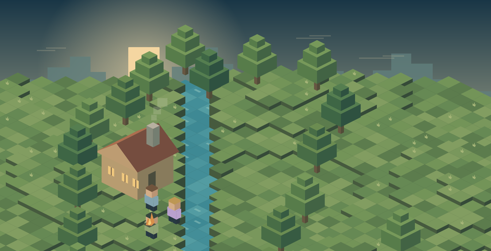

Minecraft Java Edition / Fabric
Twój świat.
Twoja ekipa.
Najlepsze światy powstają razem.
Zbierz znajomych w Party i grajcie u siebie — bez stawiania dedykowanego serwera.
Darmowy mod · Windows i Linux · prototyp

Wieczór na survivalu
Kliknij gwiazdkę, by zmienić lidera w podglądzie.
Interaktywny podgląd i autorska ilustracja. W grze interfejs Party korzysta ze stylu vanilla Minecraft.
Najpierw spotkanie
Wasze lobby.
Jeszcze przed
pierwszym blokiem.
Nie musicie czekać, aż ktoś załaduje mapę. Spotkajcie się w Party już w menu głównym, pogadajcie i dopiero wtedy wybierzcie, gdzie dziś gracie.
- Lista uczestników i czat lobby
- Do 8 osób, razem z liderem
- Nowy świat, ta sama ekipa
Sześć cyfr i jesteście razem
Podaj kod.
Resztą zajmie
się Party.
Znajomy wpisuje kod w sześciu polach i dołącza do lobby bez dodatkowej akceptacji. Gdy lider uruchomi świat, Party rozpocznie łączenie reszty ekipy.
Kod daje dostęp do Party. W modzie jest domyślnie ukryty — odsłonisz go oczkiem albo po prostu skopiujesz.
Kod znajomego. Wasze Party.
Kto dziś prowadzi?
Lider się zmienia.
Party trwa dalej.
Gwiazdka obok gracza przekazuje mu lidera w lobby. Przy zwykłym „Opuść Party” mod przygotowuje kolejnego uczestnika, zanim przełączy do niego resztę.
Przenosi się lobby, nie zapis świata. Przy nagłym zamknięciu gry lub utracie połączenia przejęcie nie jest gwarantowane.
Jak działa przekazywanie lideraOd menu do wspólnego świata
Wieczór z ekipą.
Bez wielkich przygotowań.
- W menu Minecrafta
Utwórz Party.
Kliknij Party, nadaj nazwę i wybierz limit uczestników. Nie uruchamiasz osobnego serwera Minecraft.
- Wystarczy prywatny kod
Zbierz znajomych.
Skopiuj sześć cyfr. Znajomi wpisują je w swoim menu Party i dołączają do lobby.
- Przez zwykłe menu gry
Wybierz świat.
Otwórz Singleplayer lub wybierz serwer Multiplayer. Party rozpocznie dołączanie uczestników do Twojej gry.
Kilka plików. I można grać.
Instalujesz raz.
Spotykacie się
kiedy chcecie.
Wszyscy uczestnicy potrzebują tego samego Minecrafta i wersji Party. Na początek przygotuj Fabric oraz Fabric API.
- Uruchom instalator Fabric i wybierz Minecraft 26.2.
- Włóż plik Party i zgodny Fabric API do folderu
mods. - Usuń starszy JAR Party, uruchom grę ponownie i zaproś ekipę.
%appdata%\.minecraft\modsTo domyślny folder launchera. W innym launcherze wybierz folder mods używanej instancji.
Adres usługi ustawia się automatycznie.
Warto wiedzieć
Małe pytania.
Proste odpowiedzi.
Party jest rozwijanym prototypem. Zanim zaczniecie długi wieczór, sprawdźcie połączenie na swoich komputerach.
Czy muszę kupić lub postawić serwer?
Nie potrzebujesz dedykowanego serwera Minecraft. Świat działa na komputerze lidera, połączenia obsługuje publiczny relay e4mc, a kody — usługa na Cloudflare. Dostępność tych usług i Twojego łącza ma znaczenie.
Czy to wymaga Essential Mod?
Nie. Minecraft Party jest niezależnym modem Fabric i nie korzysta z kodu, API ani infrastruktury Essential. Nie musisz też instalować osobnego moda e4mc ani VPN-a.
Co się dzieje, gdy lider wychodzi?
Przycisk „Opuść Party” próbuje przygotować kolejnego połączonego uczestnika i przenieść do niego lobby. Świat poprzedniego hosta nie jest kopiowany. Wyłączenie komputera lub nagłe zerwanie połączenia nie daje takiej gwarancji. Po zmianie lidera powstaje nowy kod dla nowych uczestników.
Czy kod jest prywatny?
Każdy posiadacz poprawnego kodu może wejść do Party bez akceptacji. Dlatego kod jest ukryty domyślnie i należy udostępniać go prywatnie. Połączenie Party chroni TLS, ale usługa kodów otrzymuje dane zaproszenia, a operator relaya widzi adresy połączeń.
Czy zadziała z każdym modem i launcherem?
Potrzebujesz kompatybilnej instalacji Fabric dla Minecrafta 26.2. Mody wymagane przez świat muszą być zgodne u uczestników. Nie deklarujemy zgodności z każdym launcherem ani zestawem modów.
Co zrobić, jeśli nie mogę się połączyć?
Zaktualizuj Party u wszystkich, utwórz nowe lobby i spróbuj ponownie. Raport diagnostyczny znajdziesz w Party → Sieć. W zgłoszeniu na GitHubie podaj wersję gry, moda i bezpieczny raport; nie publikuj kodu zaproszenia.
Zgłoś problem na GitHubieDobra, to kto tworzy świat?
Widzimy się
w Party.
Wasz następny survival zaczyna się w menu.